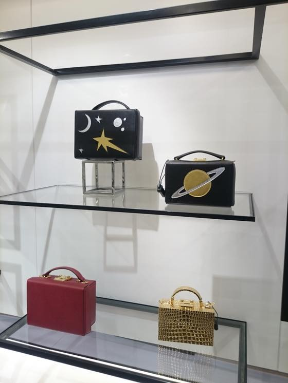
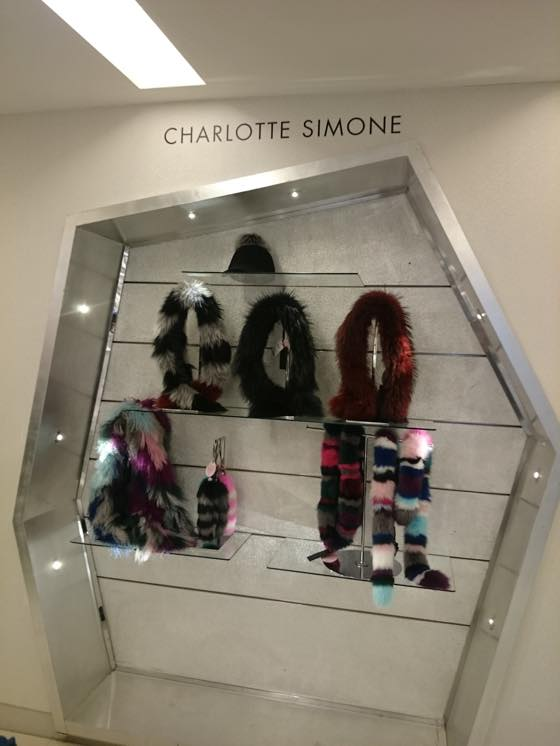
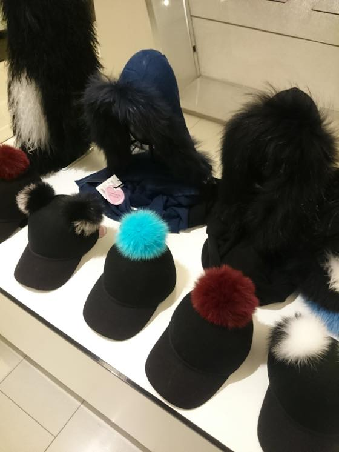
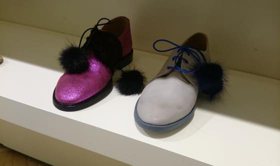
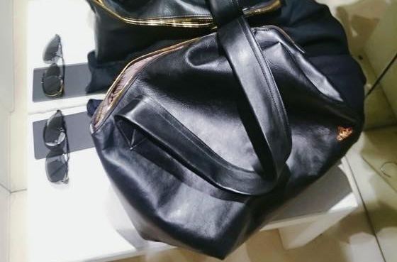
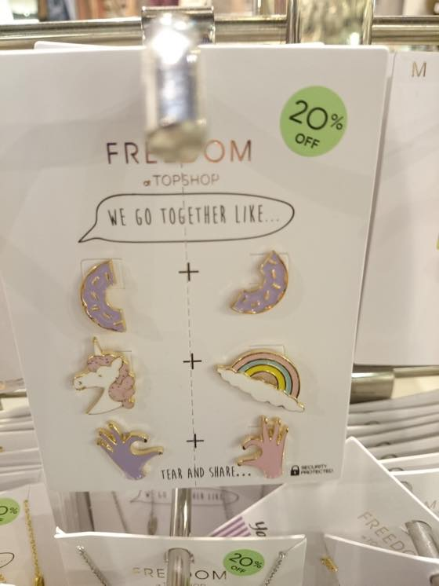
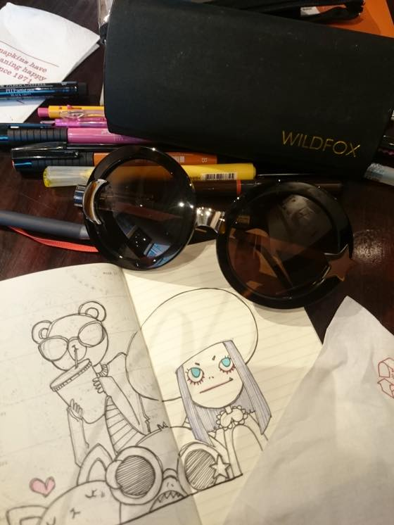

댕겨온지는 촘 되었지만 하비니콜스 나들이 사진들
주로 셀프리지 / 리버티를 젤 자주가고 그다음이 해롯, 펜윅 순인데 오랜만에 하비니콜스를 댕겨왔습니다.
확실히 펜윅 / 하비니콜스가 상대적으로 덜 붐벼요 ㅋㅋㅋ
셀프리지 / 해롯은 진짜 평일이건 주말이건 사람이 많아서 느므 힘든데 ^^;;; 이날 평화롭게 구경 잘했습니다 :3
최근 선글라스 귀신(....)이 씌여서 틈날때마다 구경하고 이것저것 사모으고 있는데
선글라스 구경은 여기가 젤 좋더라구요. (젠틀몬스터 브랜드 입점해 있어서 완전 반가웠어요 +_+)
가서 구경하고 한방에 위시리스트가 4개가 늘어서 왔......OTL;;
그리고 그중 두개는 이미 샀습니다 :p ............10개까지만 채우고 그만살려구여;;;;

Mark Cross
가방 내취향!! 별 / 우주 그리고 네모네모해!! (<-;;)


벌써...가 아니지;; 이미 가을 / 겨울옷들 나오고 털모자 나오고 그러드라구요
귀욥당// 칼라풀해//

반짝이 신발 +_+

이러니저러니해도 잘 들고 댕기고있습니다 ^^

오랜만에 들른 TOPSHOP
요즘 이런 핀 브로치가 인기인가 보더군요;; 여기저기 많이 보입니다.
나도 만들고프다 ;ㅂ;

주말에는 여전히 커피숍 잉여
최근 집착의 아이템 ㅋㅋㅋ 선글라스를 마구 그리고 있습니다.
있는재주 이렇게 써먹는거죠!! 암!! (<-??)
라디오들으면서 끄작끄작 그림그리다 윈도우쇼핑좀 하고 집에옵니다 :)